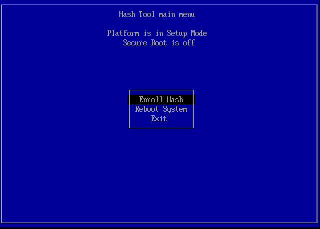
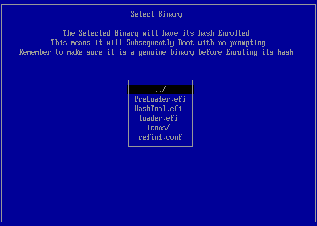

The rEFInd Boot Manager:
Managing Secure Boot
by Roderick W. Smith, rodsmith@rodsbooks.com
Originally written: 11/13/2012; last Web page update:
4/10/2022, referencing rEFInd 0.13.3
This Web page is provided free of charge and with no annoying outside ads; however, I did take time to prepare it, and Web hosting does cost money. If you find this Web page useful, please consider making a small donation to help keep this site up and running. Thanks!
| Donate $1.00 |
Donate $2.50 |
Donate $5.00 |
Donate $10.00 |
Donate $20.00 |
Donate another value |
|
|
|
|
|
|
|
This page is part of the documentation for the rEFInd boot manager. If a Web search has brought you here, you may want to start at the main page.
If you're using a computer that supports Secure Boot, you may run into extra complications. This feature is intended to make it difficult for malware to insert itself early into the computer's boot process. Unfortunately, it also complicates multi-boot configurations such as those that rEFInd is intended to manage. This page describes some Secure Boot basics and two specific ways of using rEFInd with Secure Boot: Using the Shim program and using the PreLoader program. (My separate EFI Boot Loaders for Linux page on Secure Boot covers the additional topics of disabling Secure Boot and adding keys to the firmware's own set of keys.) This page concludes with a look at known bugs and limitations in rEFInd's Secure Boot features.
As of version 10.11 ("El Capitan"), macOS uses its own new security
feature, System Integrity Protection (SIP), which creates its own set
of hoops through which rEFInd users must jump. See the rEFInd and System Integrity Protection page for details.
Macs that include the T2
security chip (introduced in 2018) support a feature that Apple calls
Secure Boot, but it's unclear to me if this is the same as UEFI Secure Boot.
See Apple's Secure Boot
documentation for details. If it is the same, then this page should
apply to the latest Macs, although you'll need to adjust Secure Boot through
Apple's Startup Security Utility rather than through a PC-style firmware
setup utility outside of the OS.
Basic Issues
Microsoft requires that non-server computers that display Windows 8 or later logos ship with Secure Boot enabled. As a practical matter, this also means that such computers ship with Microsoft's keys in their firmware. In the absence of an industry-standard body to manage the signing of Secure Boot keys, this means that Microsoft's key is the only one that's more-or-less guaranteed to be installed on the computer, thus blocking the ability to boot any OS that lacks a boot path through Microsoft's signing key. In other words, although it's not specified this way in the UEFI specification, Microsoft is effectively the Secure Boot gatekeeper.
Fortunately, Microsoft will sign third-party binaries with their key—or more precisely, with a key that Microsoft uses to sign third-party binaries. (Microsoft uses another key to sign its own binaries, and some devices, such as the Microsoft Surface tablet, lack the third-party Microsoft key.) A payment of $99 to Verisign enables a software distributor to sign as many binaries as desired. Red Hat (Fedora), Novell (SUSE), Canonical (Ubuntu), and several smaller distributions are all using this system to enable their boot loaders to run. ALT Linux provides a how-to document on having a binary signed with Microsoft's key, if you're interested in the details. Unfortunately, using a third-party signing service is an awkward solution for open source software. In fact, for this very reason two separate programs exist that shift the Secure Boot "train" from Microsoft's proprietary "track" to one that's more friendly to open source authors. Both of these programs (Shim and PreLoader) are available in binary form signed by Microsoft's key. PreLoader enables the computer to launch binaries that the user has explicitly identified as being OK. Shim enables the computer to launch binaries that are signed by a key that's built into it or that the user adds to a list known as the Machine Owner Key (MOK) list. Recent versions of Shim also support single-binary registrations, much as PreLoader does. Distributions beginning with Ubuntu 12.10 (and 12.04.2), Fedora 18, and OpenSUSE 12.3 use Shim, although Ubuntu 12.10 initially shipped with an early version of Shim that's useless for launching rEFInd because it lacked support for the MOK list. (Current versions of Ubuntu ship with more flexible versions of Shim.) PreLoader is used by some smaller and more specialized distributions, such as Arch Linux. You can switch from one to the other if you like, no matter what your distribution uses by default. Shim is definitely the more popular of these programs, and is more likely to work correctly in most situations, although there are exceptions to this rule.
There are three ways to sign a binary that will get it launched on a computer that uses Shim:
- Secure Boot keys—These keys are managed by the EFI
firmware. In a default configuration, Microsoft is the only party that's
more-or-less guaranteed to be able to sign boot loaders with these keys;
however, it's possible to replace
Microsoft's keys with your own, in order to take full control of
Secure Boot on your computer. The trouble is that this process is
tedious and varies in details from one computer to another. It's worth
noting that in the past, a few computers shipped with Canonical's key,
which can help
slightly when booting Ubuntu; if your computer is so equipped, you can
use any Shim you like and not worry about adding Canonical's key to your
MOK list, although you must still add a MOK entry for rEFInd
itself.
- Shim's built-in keys—It's possible, but not necessary, to
compile Shim with a built-in public key. Its private counterpart can
then be used to sign binaries. In practice, this key type is limited in
utility; it's likely to be used by distribution maintainers to sign
their own version of GRUB and the Linux kernels that it launches,
nothing more. On the plus side, Shim's keys require little or no
maintenance by users. One potential complication is that if you swap out
one Shim binary for another, its built-in key may change, which means
that the replacement Shim might no longer launch its follow-on boot
loader or kernels linked to the first Shim. If you wanted to pay the $99
and go to the hassle of having your own Shim binary signed, with your
own key embedded within it, then you could sign your own copy of rEFInd
and your own kernels. In the long run, this might be appealing to users
of Gentoo, which requires users to build most of their own packages from
source code. For the most part, though, Shim's built-in keys aren't of
use except to launch distribution-approved binaries.
- MOKs—Versions 0.2 and later of Shim support MOKs, which
give you the ability to add your own keys to the computer. If you want
to install multiple Linux distributions in Secure Boot mode, MOKs are
likely to be helpful. They're vital if you want to launch kernels you
compile yourself or use boot managers or boot loaders other than those
provided by your distribution.
All three key types are the same in form—Shim's built-in keys and MOKs are both generated using the same tools used to generate Secure Boot keys. The keys can be generated with the common openssl program, but signing EFI binaries requires either of two rarer programs: sbsign or pesign. If you use Shim with a distribution that doesn't support Secure Boot, you'll need to either sign the kernels yourself, which can be a hassle, or launch the kernels by way of a boot loader that doesn't check for signatures, such as ELILO. (Note, however, that many Linux distributions have begun to enforce a chain of trust beyond the boot loader and kernel. This means that if you try to boot using ELILO or some other tool that doesn't enforce Secure Boot, subsequent parts of the boot process may fail.)
Both Secure Boot and Shim support a sort of anti-authorization key or hash. These keys or hashes identify binaries that must not be launched — typically, they're known malware, or at least they're known to contain bugs that could be exploited to create security problems.
PreLoader and recent versions of Shim are easier to set up on a distribution that doesn't support Secure Boot because these tools don't require the use of keys; instead, you can tell them which binaries you trust and they will let you launch them. This works well on a system with boot managers, boot loaders, and kernels that seldom change. It's not a good solution for distribution maintainers, though, because it requires that users manually add binaries to the MOK's list of approved binaries when the OS is installed and every time those binaries change. Also, PreLoader relies on a helper program, HashTool, to enroll hashes. ("Hash" is Geek for "tell the computer that a binary is OK.") Unfortunately, the initial (and, as far as I know, only signed) HashTool can enroll hashes only from the partition from which it was launched, so if you want to use rEFInd to launch Linux kernels directly, it's easiest if you mount your EFI System Partition (ESP) at /boot in Linux or copy your kernels to the ESP. Another approach is to copy HashTool.efi to the partition that holds your kernel and rename it to almost anything else. rEFInd will then treat it like an OS boot loader and create a menu entry for it, enabling you to launch it as needed. Recent versions of Shim's key- and hash-management tool, MokManager, support reading keys and binaries from any partition that the EFI can read.
rEFInd can communicate with the Shim system to authenticate boot loaders. If a boot loader has been signed by a valid UEFI Secure Boot key, a valid Shim key, or a valid MOK, rEFInd will launch it. rEFInd will also launch unsigned boot loaders or those with invalid signatures if Secure Boot is disabled in or unsupported by the firmware. (If that's your situation, you needn't bother reading this page.) PreLoader is designed in such a way that it requires no explicit support in rEFInd to work.
My binary builds of rEFInd version 0.5.0 and later ship signed with my own keys, and I provide the public version of this key with the rEFInd package. This can help simplify setup, since you needn't generate your own keys to get rEFInd working. The rEFInd PPA for Ubuntu ships unsigned binaries, but the installation script that runs automatically when the package is installed signs the binaries with a local key as it installs them. In either case, if you lack public keys for the boot loaders that rEFInd launches, you'll need to sign your boot loaders, as described in the Managing Your MOKs section. Public keys matching most signed binaries are available, though, so chances are you'll be able to enroll them as MOKs, if necessary.
Using rEFInd with Shim
Because several major distributions support Shim, I describe it first. You may need to adjust the rEFInd installation process to get it working with Shim, especially if you're not using a distribution that uses this software. In addition to installing Shim, you should know how to manage your MOKs, so I describe this topic, too. If you don't want to use Shim, you can skip ahead to the section on PreLoader; however, in 2021 PreLoader offers few advantages and many disadvantages compared to Shim, so I strongly recommend using Shim rather than PreLoader. Note also that you can use Shim with hashes to identify individual binaries rather than with keys. This usage of Shim is much more like the PreLoader procedure, although a few details differ.
Installing Shim and rEFInd
A working Secure Boot installation of rEFInd involves at least three programs, and probably four or more, each of which must be installed in a specific way:
- Shim—You can use any version of Shim you like, except for version 0.1, which doesn't support MOKs. In many cases, Shim will already be installed on your computer from your distribution, called shim.efi or shimx64.efi in the distribution's directory on the ESP. If so, it's probably best to use that version, since its built-in key will handle your distribution's kernels. If you don't currently have a Shim installed, you can copy one from another computer or copy the file from a distribution installation disc. No matter what version of Shim you use, you must enroll rEFInd's MOK. You should install Shim just as you would install other EFI boot loaders, as described here. For use in launching rEFInd, you should install shimx64.efi in EFI/refind (or wherever rEFInd is installed) on your ESP.
- MokManager—This program is included with Shim 0.2 and later. It presents a user interface for managing MOKs, and it's launched by Shim if Shim can't find its default boot loader (generally grubx64.efi) or if that program isn't properly signed. In principle, this program could be signed with a Secure Boot key or a MOK, but such binaries are usually signed by Shim keys. This program should reside in the same directory as shimx64.efi, under the name MokManager.efi, mmx64.efi, or another architecture-specific variant of that. Although you could theoretically do without MokManager, in practice you'll need it at least temporarily to install the MOK with which rEFInd is signed.
- rEFInd—Naturally, you need rEFInd. Because Shim is hard-coded to launch a program called grubx64.efi, you must install rEFInd using that name and to the same directory in which shimx64.efi resides. In theory, rEFInd could be signed with a Secure Boot key, a Shim key, or a MOK; however, because Microsoft won't sign binaries distributed under the GPLv3, I can't distribute a version of rEFInd signed with Microsoft's Secure Boot key; and as I don't have access to the private Shim keys used by any distribution, I can't distribute a rEFInd binary signed by them. (Distributions can provide rEFInd binaries signed with the their own Shim keys. This appears to be the case with the rEFInd binaries distributed with ALT Linux, according to its package description. On the other hand, Ubuntu, for one, signs their GRUB binaries but not their rEFInd binaries.) Thus, rEFInd will normally be signed by a MOK. Beginning with version 0.5.0, rEFInd binaries that I provide are signed by me. Beginning with version 0.5.1, the installation script provides an option to sign the rEFInd binary with your own key, provided the necessary support software is installed.
- Your boot loaders and kernels—Your OS boot loaders, and usually your Linux kernels, must be signed. They can be signed with any of the three key types. Indeed, your system may have a mix of all three types—a Windows 8 or later boot loader will most likely be signed with Microsoft's Secure Boot key, GRUB and kernels provided by most distributions will be signed with their own Shim keys, and if you use your own locally-compiled kernel or a boot loader from an unusual source you may need to sign it with a MOK. Aside from signing, these files can be installed in exactly the same way as if your computer were not using Secure Boot.
If you've installed a distribution that provides Shim and can boot it with Secure Boot active, and if you then install rEFInd using the RPM file or Debian package that I provide or by running refind-install, chances are you'll end up with a working rEFInd that will start up the first time, with one caveat: You'll have to use MokManager to add rEFInd's MOK to your MOK list, as described shortly. If you don't already have a working copy of Shim on your ESP, your task is more complex. Broadly speaking, the procedure should be something like this:
- Boot the computer. This can be a challenge in and of itself. You may
need to use a Secure Boot–enabled Linux emergency disc,
temporarily disable Secure Boot, or do the work from Windows.
- Download rEFInd in binary form (the binary
zip or CD-R image file). If you download the binary zip file, unzip it;
if you get the CD-R image file, burn it to a CD-R and mount it.
- Download Shim from your distribution. (Don't use an early 0.1
version, though; as noted earlier, it's inadequate for use with
rEFInd.)
- Copy the shimx64.efi and MokManager.efi (or more
commonly today, mmx64.efi) binaries to the directory you intend
to use for rEFInd—for instance, EFI/refind on the
ESP.
- Follow the installation instructions for rEFInd on the Installing rEFInd page; however, you should
normally give rEFInd the filename grubx64.efi and register
shimx64.efi with the EFI by using efibootmgr in Linux or
bcdedit in Windows. Be sure that rEFInd (as
grubx64.efi), shimx64.efi, and
MokManager.efi/mmx64.efi
all reside in the same directory. If you're using Shim 0.7 or later and
are installing it under Linux, you may optionally keep rEFInd's
refind_x64.efi name; but you must then tell Shim to use rEFInd
by passing an additional -u "shimx64.efi refind_x64.efi" option to
efibootmgr. (In early 2020, I discovered that some recent Shim
binaries include a bug that prevents Shim from launching anything but
grubx64.efi and its other internally-coded files. I haven't yet
investigated to determine exactly which Shim versions are affected by
this bug, though.) Change the filenames to the actual filenames used by
Shim and rEFInd, respectively.
- Copy the refind.cer file from the rEFInd package to your ESP,
ideally to a location with few other files. (The rEFInd installation
directory should work fine.)
- Optionally, type mokutil -i refind.cer,
adding whatever directory components are needed to access
refind.cer; or you can substitute your own key file if you
re-sign the rEFInd binaries, as described later, in Managing Your MOKs. You will be asked to enter a
password, which is for temporary use only and need not match your user
or root password. This action will store the rEFInd public key
to the NVRAM, enabling MokManager to access it more easily. In theory,
this step obviates the previous one; but it's generally a good idea to
have rEFInd's Secure Boot public key on the boot disk so that it can be
re-enrolled manually, if necessary.
- Reboot. With any luck, you'll see a simple text-mode user interface with
a label of Shim UEFI key management. This is the MokManager
program, which Shim launched when rEFInd failed verification because its
key is not yet enrolled. You may be prompted to press a key to begin MOK
management. You have only ten seconds to do so, or the boot will
continue without enrolling the MOK, and rEFInd will probably not launch.
What happens when you begin MOK management depends of whether you used
mokutil to install the MOK....
- If you did not use mokutil, then you must locate and
enroll the rEFInd key file as follows:
- Press your down arrow key and press Enter to select Enroll key
from disk; or if you used mokutil earlier, instead
select Enroll MOK. The screen will clear and, if you did
not use mokutil to install the key, prompt you to
select a key, as shown here:

(Early versions of MokManager used a more primitive user interface
with white and yellow text on a black background. If this is what you
see, some details will differ, but the program should still work. You
might want to find more recent programs for the better user interface
and other updated features, though.)
- Each of the lines with a long awkward string represents a disk
partition. Select one and you'll see a list of files. Continue
selecting subdirectories until you find the refind.cer or
refind_local.cer file you copied to the ESP earlier. (Note
that in the early user interface the long lines can wrap and hide
valid entries on the next line, so you may need to select a disk whose
entry is masked by another one!)
- Select refind.cer or refind_local.cer. You can type
1 to view the certificate's details if you
like, or skip that and type 0 to enroll the
key.
- Back out of any directories you entered and return to the MokManager
main menu.
- If you used mokutil, the task is slightly simplified:
- Select Enroll MOK from the main menu.
- You may optionally view the key, but to enroll it, you must select
Continue.
- MokManager will now ask for verification, and then for a password.
Enter the password you specified when you used mokutil.
- Select Reboot at the main menu.
At this point the computer may boot into its default OS, reboot, or perhaps even hang. When you reboot it, though, rEFInd should start up in Secure Boot mode. You can verify this by selecting the About rEFInd tool in the main menu. Check the Platform item in the resulting screen; it should verify that Secure Boot is active. You should now be able to launch any boot loader signed with a key recognized by the firmware or by Shim (including any MOKs you've enrolled). If you want to manage keys in the future, rEFInd displays a new icon in the second (tools) row you can use to launch MokManager. (This icon appears by default if MokManager is installed, but if you edit showtools in refind.conf, you must be sure to include mok_tool as an option in order to gain access to it.)
If you're using rEFInd to boot multiple Linux versions, chances are you'll need to add the keys for the distributions whose Shim you're not using as MOKs. rEFInd ships with a selection of such keys and copies them to the keys subdirectory of the rEFInd installation directory on the ESP as a convenience. Note that you must enroll keys with .cer or .der filename extensions. Although .crt files contain the same information, their format is different and they cannot be used by MokManager.
Managing Your MOKs
The preceding instructions provided the basics of getting rEFInd up and running, including using MokManager to enroll a MOK on your computer. If you need to sign binaries, though, you'll have to use additional tools. The OpenSSL package provides the cryptographic tools necessary, but actually signing EFI binaries requires additional software. Two packages for this are available: sbsigntool and pesign. Most distributions ship with at least one of them. The following procedure uses sbsigntool. To sign your own binaries, follow these steps (you can skip the first five steps if you've successfully used refind-install's --localkeys option):
- If it's not already installed, install OpenSSL on your computer. (It
normally comes in a package called openssl.)
- If you did not re-sign your rEFInd binaries with
refind-install's --localkeys option, type the
following two commands to generate your public and private keys:
$ openssl req -new -x509 -newkey rsa:2048 -keyout refind_local.key \
-out refind_local.crt -nodes -days 3650 -subj "/CN=Your Name/"
$ openssl x509 -in refind_local.crt -out refind_local.cer -outform DER
Change Your Name to your own name or other identifying
characteristics, and adjust the certificate's time span (set via
-days) as you see fit. If you omit the -nodes option,
the program will prompt you for a passphrase for added security.
Remember this, since you'll need it to sign your binaries. The result
is a private key file (refind_local.key), which is highly
sensitive since it's required to sign binaries, and two public keys
(refind_local.crt and refind_local.cer), which can be
used to verify signed binaries' authenticity. The two public key files
are equivalent, but are used by different
tools—sbsigntool uses refind_local.crt to sign
binaries, but MokManager uses refind_local.cer to enroll the
key. If you used refind-install's --localkeys option,
this step is unnecessary, since these keys have already been created
and are stored in /etc/refind.d/keys/.
- Copy the three key files to a secure location and adjust permissions
such that only you can read refind_local.key. You'll need these
keys to sign future binaries, so don't discard them. Ideally, these keys
should be stored on a USB flash drive kept in a safe; however, just how
far you want to go with security is up to you.
- Copy the refind_local.cer file to your ESP, ideally to a
location with few other files. (Some versions of MokManager's user
interface becomes unreliable when browsing directories with lots of
files.)
- Download and install the sbsigntool package for your
distribution. If your distribution doesn't provide this program, you can
obtain the source code by typing git clone
git://kernel.ubuntu.com/jk/sbsigntool. (You may need to install
git, and you'll then have to compile the software from
source.)
- Sign your binary by typing sbsign --key
refind_local.key --cert refind_local.crt --output binary-signed.efi binary.efi, adjusting the
paths to the keys and the binary names.
- Copy your signed binary to a suitable location on the ESP for rEFInd to
locate it. Be sure to include any support files that it needs,
too.
- Check your refind.conf file to ensure that the
showtools option is either commented out or includes
mok_tool among its options.
- Reboot. You can try launching the boot loader you just installed, but
chances are it will generate an Access Denied message. For it
to work, you must launch MokManager using the tool that rEFInd presents
on its second row. You can then enroll your refind_local.cer
key just as you enrolled the refind.cer key.
At this point you should be able to launch the binaries you've signed. Unfortunately, there can still be problems; see the upcoming section, Secure Boot Caveats, for information on them. Alternatively, you can try using PreLoader rather than Shim.
Using rEFInd with PreLoader
If you want to use Secure Boot with a distribution that doesn't come with Shim but the preceding description exhausts you, take heart: PreLoader is easier to set up and use for your situation! (Alternatively, you can use recent versions of Shim with hashes instead of with keys, in which case the PreLoader instructions apply to Shim, albeit with some user interface differences.) Unfortunately, PreLoader is still not as easy to use as not using Secure Boot at all, and it's got some drawbacks, but it may represent an acceptable middle ground. To get started, proceed as follows:
- Boot the computer. As with Shim, this can be a challenge; you may need
to boot with Secure Boot disabled, use a Secure Boot–enabled live
CD, or do the installation from Windows.
- Download rEFInd in binary form (the binary
zip or CD-R image file). If you download the binary zip file, unzip it;
if you get the CD-R image file, burn it to a CD-R and mount it.
- Download PreLoader from its
release page or by clicking the following links. Be sure to get
both the PreLoader.efi
and HashTool.efi
files.
- Copy the PreLoader.efi and HashTool.efi binaries to
the directory you intend to use for rEFInd—for instance,
EFI/refind on the ESP.
- Follow the installation instructions for rEFInd on the Installing rEFInd page; however, give rEFInd
the filename loader.efi and register PreLoader.efi
with the EFI by using efibootmgr in Linux or bcdedit
in Windows. Be sure that rEFInd (as loader.efi),
PreLoader.efi, and HashTool.efi all reside in the
same directory. (If you want to use Shim with hashes, name rEFInd
grubx64.efi.)
- Reboot. With any luck, you'll see HashTool appear with a warning
message stating that it was unable to launch loader.efi and
declaring that it will launch HashTool.efi. Press the Enter
key to continue.
- HashTool should now appear. It should give you three or four options,
including Enroll Hash, as shown here. Select this option

- You can now select the binary you want to authorize. You should first
select loader.efi, since that's rEFInd. The program presents
the hash (a very long number) and asks for confirmation. Be sure to
select Yes.

- Repeat the preceding two steps for any additional binaries you might
want to enroll. These include any EFI filesystem drivers you're using,
any boot loaders you're launching from rEFInd (other than those that
are already signed, such as Microsoft's boot loader), and possibly your
Linux kernel.
- At the HashTool main menu, select Exit. rEFInd should
launch.
If you did everything right, rEFInd should now launch follow-on boot loaders and kernels, including both programs signed with the platform's Secure Boot keys and binaries that you've authorized with HashTool. If you need to authorize additional programs, you can do so from rEFInd by using the MOK utility tool icon that launches HashTool.efi from the second row of icons. (This icon should appear by default, but if you uncomment the showtools token in refind.conf, be sure that mok_tool is present among the options.)
Although PreLoader is easier to set up than Shim, particularly if you need to launch programs or kernels that aren't already signed, it suffers from the problem that you must register every new program you install, including Linux kernels if you launch them directly from rEFInd. This need can be a hassle if you update your kernels frequently, and every new registration chews up a little space in your NVRAM. Nonetheless, PreLoader can be a good Secure Boot solution for many users or if you want to build a portable Linux installation that you can use on any computer with minimal fuss.
Secure Boot Caveats
rEFInd's Secure Boot originated with version 0.5.0 of the program, and was revamped for version 0.6.2, both released in late 2012. It's worked well for myself and several others with whom I've corresponded; but you might still run into problems. Some issues you might encounter include the following:
- rEFInd uses the same EFI "hooks" as PreLoader. This method, however, is
part of an optional EFI subsystem, so in theory some EFIs might not
support it. For months, I knew of no such implementation, but this
SuperUser question indicates that at least one such implementation
exists. Subsequent discussions on the site imply that the computer
doesn't support Secure Boot at all. The bottom line: If you encounter
the error message Failed to install override security policy,
try removing PreLoader from your boot path.
- Under certain circumstances, the time required to launch a boot loader
can increase. This is unlikely to be noticeable for the average small
boot loader, but could be significant for larger boot loaders on slow
filesystems, such as Linux kernels on Linux-native filesystems.
- rEFInd's own Secure Boot support is theoretically able to work on
non-x86-64 platforms; however, I have not tested it on 32-bit or
ARM64 platforms.
- In theory, signing Microsoft's boot loader with a MOK should work. This
might be handy if you want to replace your computer's built-in keys
with your own but still boot Windows—but be aware that if Windows
replaces its boot loader, it will then stop working.
- Some Secure Boot implementations are just plain flaky. For instance,
I've had problems launching some binaries built with GNU-EFI on an ASUS
P8H77-I motherboard; and I couldn't get Secure Boot working at all
(except with Windows) on an HP EliteDesk 705. Such problems are most
common on older computers (from 2013 or earlier), but they could exist
on anything. Disabling
Secure Boot may be the best solution to such problems.
- In 2020, a bug in GRUB 2, known as Boot
Hole, was discovered. This bug could theoretically enable an
attacker to run malicious code in the pre-boot environment. Subsequent
analyses discovered several other potential security bugs in GRUB 2.
Because there are so many signed GRUB 2 binaries in distribution, these
flaws threatened to overrun the standard Secure Boot storage for
forbidden binaries, known as the dbx. (The dbx is held in NVRAM, which
is severely limited in size.) Thus, Linux distribution maintainers
agreed to implement a dbx-like mechanism within Shim, and Microsoft
would add earlier Shim binaries to the UEFI dbx. The upshot of this is
that, if you installed rEFInd prior to these events, the Shim binary
that it uses may be added to your computer's dbx by Windows updates, and
rEFInd may stop working. The solution is to update the
shimx64.efi file in rEFInd's directory with the latest
version.
If you launch a boot loader or other program from rEFInd that relies on the EFI's standard program-launching code, that program should take advantage of Shim and its MOKs. For instance, if you launch gummiboot (aka systemd-boot) from rEFInd (and rEFInd from Shim), gummiboot should be able to launch Shim/MOK-signed Linux kernels. In practice, this may not work with all versions of Shim, though. Shim 0.8 and later enables the binary that it launches to launch just one additional binary, not an endless stream of them. (rEFInd employs an internal workaround to this problem to do its own job.)
My focus in testing rEFInd's Secure Boot capabilities has been on getting Linux kernels with EFI stub loaders to launch correctly. I've done some minimal testing with GRUB 2, though. I've also tested some self-signed binaries, such as an EFI shell and MokManager. (The EFI shell launches, but will not itself launch anything that's not been signed with a UEFI Secure Boot key. This of course limits its utility.)
Some of the awkwardness of using rEFInd with Secure Boot is due to the need to manage MOKs (either keys with Shim or hashes with PreLoader). Such problems would evaporate if you could get a copy of rEFInd signed with your distribution's Secure Boot key. Thus, if you're annoyed by such problems, try filing a feature request with your distribution maintainer to have them include rEFInd (and sign it!) with their official package set.
copyright © 2012–2021 by Roderick W. Smith
This document is licensed under the terms of the GNU Free Documentation License (FDL), version 1.3.
If you have problems with or comments about this Web page, please e-mail me at rodsmith@rodsbooks.com. Thanks.
Go to the main rEFInd page
Learn about rEFInd's history
Return to my main Web page.